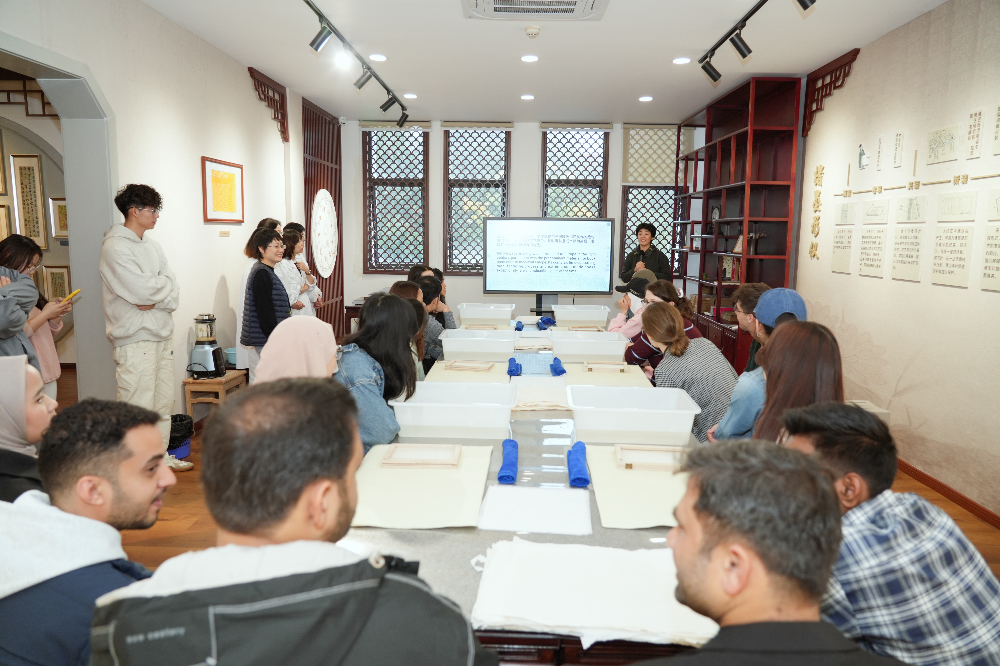

学院通知 · 校园活动
当立冬遇上古法造纸——川大国际学生中国传统手工造纸体验活动
发布时间：2025-11-11 17:42:00
2025年11月7日，时值立冬，寒意初临，四川大学典籍馆内却暖意融融。四川大学2025年“留传经典・蜀韵川大”国际学生特色文化体验项目之“匠心传承：感受指尖上的中国”在此圆满举行。活动由留学生管理办公室资助立项，四川大学图书馆主办，来自东南亚、中东、欧洲等地的20名四川大学留学生齐聚一堂，在图书馆老师的带领下，亲身感受了中国古代“四大发明”之一 ——造纸术的独特魅力。 活动伊始，图书馆古籍特藏中心的老师为同学们带来了一场精彩的“纸文化”入门课。从蔡伦改进造纸术的伟大发明，到纸张对世界文明产生的深远影响；从丰富多彩的纸品类型，到一道道严谨的造纸步骤……同学们对这项古老技艺有了系统的初步认识，并纷纷为这张薄薄的纸所承载的厚重历史而惊叹。 理论讲解之后，古籍修复室的修复师为大家现场演示了古法造纸的全过程。从打浆、抄纸到压榨、烘干，修复师娴熟精准的操作，引得同学们阵阵惊叹，迫不及待想要亲手尝试。 最后，在古籍特藏中心老师们的耐心指导下，留学生们纷纷挽起袖子，亲自动手体验，每一个步骤都小心翼翼，充满新奇。当看到自己亲手制作的纸张初步成型时，满满的成就感写在了每个人的脸上。 不仅如此，大家还利用自己制作的、独一无二的纸张，体验了古老的雕版印刷术。当墨水的纹理清晰地印在自己造的纸上，跨越千年的智慧仿佛在指尖完成了传承与对话。 立冬是万物收藏的起始。但我们更愿将其视为一次文化种子的播种。希望这场温暖而有趣的活动，能让来自世界各地的川大学子，将这份对中华传统文化的美好感知珍藏于心，成为他们川大记忆中闪亮的一页，也成为文明互鉴中一座小小的、坚实的桥梁。 古籍特藏中心中心供稿
